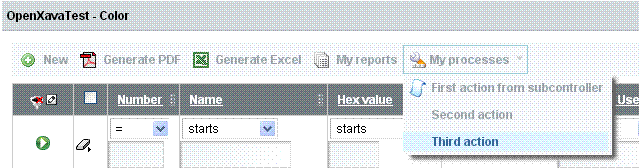

Table of Contents
Chapitre 7. Contrôleurs
Les contrôleurs sont utilisés pour définir des actions (boutons, liens, images) que l'utilisateur peut cliquer. Les contrôleurs sont définis dans le fichier controllers.xml qui se trouve dans le dossier xava de votre projet.Les actions ne sont pas définies dans les composants, car il existe beaucoup d'actions génériques qui peuvent être utilisées avec n'importe quel composant. Dans le dossier OpenXava/xava, vous trouverez un fichier default-controllers.xml qui contient un groupe de contrôleurs génériques qui peuvent être utilisés dans votre application.
Le fichier controllers.xml contient un élément racine <controllers/> avec la syntaxe :
<controllers> <env-var ... /> ... <!-- 1 --> <object ... /> ... <!-- 2 --> <controller ... /> ... <!-- 3 --> </controllers>
- env-var (plusieurs, optionnel). Variable qui contient des informations de configuration. Cette variable est accessible depuis les actions et les filtres et sa valeur peut être redéfinie pour chaque module.
- object (plusieurs, optionnel). Définit un objet Java avec une portée de session, c'est-à-dire des objets qui sont créés pour un utilisateur et existent tout au long de sa session.
- controller (plusieurs, obligatoire). Un contrôleur est un groupe d'actions.
Variables d'environnement
Les variables d'environnement contiennent des informations de configuration. Ces variables sont accessibles depuis les actions et les filtres et leurs valeurs peuvent être redéfinies par chaque module. La syntaxe est la suivante :<env-var name="name" <!-- 1 --> value="value" <!-- 2 --> />
- name (obligatoire). Le nom de la variable d'environnement en lettres capitales et avec le caractère souligné pour séparer les mots.
- value (obligatoire). La valeur de la variable d'environnement.
<env-var name="MONAPPLICATION_ANNEE_PAR_DEFAUT" value="2007"/> <env-var name="MONAPPLICATION_COULEUR" value="ROUGE"/>
Objets de session
Les objets déclarés dans le fichier controllers.xml ont une portée de session. Cela signifie que ces objets sont créés pour un utilisateur et existent tout le long de sa session de travail. La syntaxe est celle-ci :<object name="objectName" <!-- 1 --> class="objectType" <!-- 2 --> value="initialValue" <!-- 3 --> scope="module|global" <!-- 4 Depuis v2.1 --> />
- name (obligatoire). Le nom de l'objet. En général, vous utilisez le nom de l'application comme préfixe pour éviter des collisions de noms dans des grands projets.
- class (obligatoire). Nom de la classe Java complètement qualifiée.
- value (optionnel). Valeur initiale de l'objet
- scope (optionnel) (depuis v2.1). La valeur par défaut est module. Si vous utilisez la valeur module, chaque module possédera sa propre copie de l'objet. Si vous utilisez la portée global, le même objet sera partagé par tous les modules pour toutes les applications OpenXava s'exécutant dans la même archive web (.war).
<object name="xava_view" class="org.openxava.view.View"/> <object name="xava_referenceSubview" class="org.openxava.view.View"/> <object name="xava_tab" class="org.openxava.tab.Tab"/> <object name="xava_mainTab" class="org.openxava.tab.Tab"/> <object name="xava_row" class="java.lang.Integer" value="0"/> <object name="xava_language" class="org.openxava.session.Language"/> <object name="xava_newImageProperty" class="java.lang.String"/> <object name="xava_currentReferenceLabel" class="java.lang.String"/> <object name="xava_activeSection" class="java.lang.Integer" value="0"/> <object name="xava_previousControllers" class="java.util.Stack"/> <object name="xava_previousViews" class="java.util.Stack"/>Ces objets sont utilisés par OpenXava pour fonctionner, même s'il est normal que vous en utilisez certains pour vos propres actions. Si vous souhaitez créer vos propres objets de session, il faut les déclarer dans le fichier controllers.xml dans le dossier xava de votre projet.
Le contrôleur et ses actions
La syntaxe d'un contrôleur est la suivante :<controller name="name" <!-- 1 --> > <extends ... /> ... <!-- 2 --> <action ... /> ... <!-- 3 --> <subcontroller .../> ... <!-- 4 Depuis v4.8 --> </controller>
- name (obligatoire). Le nom du contrôleur
- extends (plusieurs, optionnel). Permet d'utiliser de multiples héritages. Pour ce faire, un contrôleur hérite de toutes les actions du (des) contrôleur(s)
- action (plusieurs, obligatoire). Implémente la logique à exécuter lorsque l'utilisateur final clique sur un bouton ou un lien.
- subcontroller (plusieurs, optionnel): (Depuis v4.8) Please, translate next sentece to French. Allows grouping several actions that are shown in a drop-down button.
<action name="name" <!-- 1 --> label="label" <!-- 2 --> description="description" <!-- 3 --> mode="detail|list|ALL" <!-- 4 --> image="image" <!-- 5 --> class="class" <!-- 6 --> hidden="true|false" <!-- 7 --> on-init="true|false" <!-- 8 --> on-each-request="true|false" <!-- 9 Depuis v2.1.2 --> before-each-request="true|false" <!-- 10 Depuis v2.2.5 --> after-each-request="true|false" <!-- 11 Depuis v4.0.1 --> by-default="never|almost-never (depuis v4m6)| if-possible|almost-always|always" <!-- 12 --> takes-long="true|false" <!-- 13 --> confirm="true|false" <!-- 14 --> keystroke="keystroke" <!-- 15 Depuis v2.0.1 --> show-dialog="true|false" <!-- 16 Only in v4m1 --> hide-dialog="true|false|default" <!-- 17 Only in v4m1 --> in-each-row="true|false" <!-- 18 Depuis in v4m4 --> > <set ... /> ... <!-- 19 --> <use-object ... /> ... <!-- 20 --> </action>
- name (obligatoire). Nom de l'action qui doit être unique au sein du contrôleur, mais qui peut être répété dans d'autres contrôleurs. Lorsque vous faites référence à une action, utilisez toujours le format NomContrôleur.nomAction.
- label (optionnel). Le libellé du bouton ou du lien. Il est préférable d'utiliser les ressources i18n.
- description (optionnel). Texte de description de l'action. Il est préférable d'utiliser les ressources i18n.
- mode (optionnel). Indique dans quel mode l'action doit être visible. La valeur par défaut est ALL (tous), ce qui signifie que l'action est visible partout.
- image(optionnel). URL de l'image associée à cette action. Dans l'implémentation courante, si vous spécifiez une image, elle est affichée comme un lien. Please, translate the next sentences to French: Until v4.1.x the root for the URL was xava, it was needed to use images/ as prefix. Since v4.2 the root depend on the style and in the default style it is xava/images, so it is not longer needed to use the images/ as prefix, though it is still supported for not breaking backward compatibility.
- class (optionnel). Implémente la logique à exécuter. La classe doit implémenter l'interface IAction.
- hidden (optionnel). Une action cachée (hidden) n'est pas affichée dans la barre de boutons, même si elle peut être utilisée à d'autres endroits, par exemple, associée à un événement, à une propriété, dans des collections, etc.. La valeur par défaut est faux (false).
- on-init (optionnel). Si vous attribuez true (vrai) à cette propriété, l'action sera exécutée automatiquement à l'initialisation du module. La valeur par défaut est false (faux).
- on-each-request (optionnel) (depuis v2.1.2). Si vous attribuez true (vrai) à cet attribut, l'action sera exécutée automatiquement à chaque requête de l'utilisateur, c'est-à-dire à la première exécution du module et avant chaque exécution d'action par l'utilisateur, mais avant que les objets de session d'OpenXava aient été préparés et prêts à être utilisés. Cela veut dire que vous ne pouvez pas utiliser xava_view et xava_tab depuis votre action. Par défaut la valeur est false (faux). Utilisé en conjonction avec l'attribut mode, vous pouvez discriminer l'exécution de cette action pour un mode concret (liste ou détail) (depuis 3.0.2).
- before-each-request (optionnel) (depuis v2.2.5). Si vous attribuez true (vrai) à cette propriété, l'action sera exécutée automatiquement avant chaque requête de l'utilisateur, c'est-à-dire à la première exécution du module et avant chaque exécution d'action par l'utilisateur. Au moment de l'exécution, tous les objets de session d'OpenXava ont été préparés et prêts à être utilisés. Cela veut dire que vous pouvez utiliser xava_view et xava_tab depuis votre action. Par défaut la valeur est false (faux). Utilisé en conjonction avec l'attribut mode, vous pouvez discriminer l'exécution de cette action pour un mode concret (liste ou détail) (depuis 3.0.2).
- after-each-request (optionnel) (depuis v4.0.1). Si vous attribuez true (vrai) à cette propriété, l'action sera exécutée automatiquement après chaque requête de l'utilisateur, c'est-à-dire à la première exécution du module et avant chaque exécution d'action par l'utilisateur. Par défaut la valeur est false (faux). Utilisé en conjonction avec l'attribut mode, vous pouvez discriminer l'exécution de cette action pour un mode concret (liste ou détail).
- by-default (optionnel). Indique le poids de cette action lors du choix de l'action par défaut à exécuter par défaut. L'action par défaut est celle exécutée lorsque l'utilisateur presse sur la touche ENTER. La valeur par défaut est almost-never (until 4m5 was never).
- takes-long (optionnel). Si vous attribuer true (vrai) à cet attribut, vous indiquez que cette action prend du temps (des minutes ou des heures). Dans l'implémentation courante, OpenXava montre une barre de progression. La valeur par défaut est false (faux).
- confirm (optionnel). Si vous attribuer true (vrai) à cet attribut, avant l'exécution de l'action, une boîte de dialogue sera montrée à l'utilisateur qui pourra confirmer ou non l'exécution de l'opération. La valeur par défaut est false (faux).
- keystroke (optionnel) (depuis v2.0.1). Définit une combinaison de touches que l'utilisateur peut presser pour exécuter l'action. Les valeurs possibles sont les mêmes que celles définies dans javax.swing.KeyStroke. Exemples : "control A", "alt x", "F7".
- show-dialog (optionnel): (Only in v4m1, not available since v4m2) Please translate this to French. If true after the action execution the current user interface will be show inside a modal dialog. The default is false.
- hide-dialog (optionnel): (Only in v4m1, not available since v4m2) Please translate this to French. If true then if currently there is a modal dialog shown then it will be hidden. The default value is default, it means that the dialog will be hidden only when the action name is "cancel" or it is the default action.
- in-each-row (optionnel): Please, translate to French: (New in v4m4) If true and this action is shown in list mode or in a collection the action will be shown in each row. The action must have an int row property (TabBaseAction and CollectionBaseAction already have the row property). The default is false.
- set (plusieurs, optionnel). Définit la valeur d'une propriété de l'action. Ainsi, la même action peut être configurée de plusieurs manières différentes et être utilisée dans plusieurs contrôleurs.
- use-object (plusierus, optionnel). Assigne un objet de session à une propriété de l'action juste avant l'exécution de l'action. Après l'exécution, la valeur de la propriété est replacée dans le contexte (mise à jour de l'objet de session, ainsi vous pouvez mettre à jour des objets immuables).
<controller name="Remarks"> <action name="hideRemarks" class="org.openxava.test.actions.HideShowPropertyAction"> <set property="property" value="remarks" /> <set property="hide" value="true" /> <use-object name="xava_view"/> <!-- Not needed since v4m2 --> </action> <action name="showRemarks" mode="detail" class="org.openxava.test.actions.HideShowPropertyAction"> <set property="property" value="remarks" /> <set property="hide" value="false" /> <use-object name="xava_view"/> <!-- Not needed since v4m2 --> </action> <action name="setRemarks" mode="detail" class="org.openxava.test.actions.SetPropertyValueAction"> <set property="property" value="remarks" /> <set property="value" value="Hell in your eyes" /> <use-object name="xava_view"/> <!-- Not needed since v4m2 --> </action> </controller>A présent, vous pouvez inclure ce contrôleur dans le module que vous souhaitez. Ceci se fait en éditant le module cible dans lequel vous voulez voir apparaître les actions dans le fichier xava/application.xml :
<module name="Deliveries"> <model name="Delivery"/> <controller name="Typical"/> <controller name="Remarks"/> </module>Ainsi, vous avez dans votre module les actions du contrôleur Typical (opérations CRUD et impressions) plus celle qui sont définies dans le contrôleur nommé Remarks (remarques). La barre de boutons supérieure ressemblera à ceci :

Et la barre inférieure à ceci :
Vous pouvez noter que les actions avec des images sont situées en haut et celles sans en bas. Le code de l'action hideRemarks (Cacher les remarques) est le suivant :
package org.openxava.test.actions; import org.openxava.actions.*; /** * @author Javier Paniza */ public class HideShowPropertyAction extends ViewBaseAction { // 1 private boolean hide; private String property; public void execute() throws Exception { // 2 getView().setHidden(property, hide); // 3 } public boolean isHide() { return hide; } public void setHide(boolean b) { hide = b; } public String getProperty() { return property; } public void setProperty(String string) { property = string; } }Une action doit implémenter l'interface IAction, mais en général étend une classe de base existante qui implémente cette interface. L'action de base la plus basique est BaseAction qui implémente la plupart des méthodes de l'interface IAction sauf execute(). Dans le cas ci-dessus, c'est ViewBaseAction qui est utilisée comme classe de base. Cette classe a une propriété view de type View. Ceci, lié à la déclaration suivante dans l'action :
<use-object name="xava_view"/> <!-- Not needed since v4m2 -->permet de gérer la vue (l'interface utilisateur) depuis une action en utilisant la propriété view.
L'élément <use-object/> récupère l'objet de session xava_view et l'assigne à la propriété view (en supprimant le préfixe xava_ en général supprime le préfixe monapplication_ avant d'assigner l'objet à la propriété) de votre objet juste avant d'appeler la méthode execute() (2). Please, translate to French: Though since v4m2 is not needed to use <use-object /> to inject xava_view because ViewBaseAction already inject it using @Inject.
A présent, à l'intérieur de la méthode execute(), vous pouvez utiliser la méthode getView() comme vous le souhaitez (3). Dans notre cas, c'est pour cacher une propriété. Vous pouvez voir toutes les méthodes disponibles dans la documentation de org.openxava.view.View.
Avec :
<set property="property" value="remarks" /> <set property="hide" value="true" />vous pouvez assigner des valeurs constantes aux propriétés de votre action.
Subcontroller (new in v4.8)
Please, translate this section to FrenchWith the subcontroller we can grouping several actions and show them in a drop-down button. In your controllers.xml you can put:
<controllers> <controller name="Color"> <action name="seeMessage" class="org.openxava.test.actions.SeeMessageAction"/> <subcontroller controller="ColorSub" <!-- 1 --> image="opciones.png"/> </controller> </controllers>
- controller: (required) the name of a controller

You can put the controller name in i18n files.
Dependency injection
Please, translate this section to FrenchUsing Dependency injection the value of a field or property is set by the framework, not by the developer.
@Inject (JSR-330) (new in v4m2)
Please, translate this section to FrenchSince v4m2 OpenXava supports JSR-330, the Java standard for dependency injection. In order to inject a session object in an action you only have to annotate a field with @javax.inject.Inject . Thas is, if you have a session object and an action in your controllers.xml as following:
<controllers> <object name="xavatest_activeYear" class="java.lang.Integer" value="2010" scope="global"/> <controller name="ActiveYear"> <action name="change" class="org.openxava.test.actions.ChangeActiveYearAction"/> </controller> </controllers>In order to inject the xavatest_activeYear object into ChangeActionYearAction you have to use @Inject, in this way:
public class ChangeActiveYearAction extends ViewBaseAction { @Inject private int activeYear; // Getter and setter are not needed public void execute() throws Exception { assert activeYear == 2010; // The value from session object activeYear = 2012; // It changes the value of session object } }Thus the xavatest_activeYear object is injected in the activeYear field before call to execute(); and after execute() execution the value of the activeYear field is assigned back to xavatest_actionYear. So, you can change session objects state from inside an action, even with immutable and primitive types.
As you see, the default name of the session object to inject is the name of the attribute ignoring the prefix (ignoring xavatest_ in this case). Although you can use @Named (also JSR-330 standard) to specify a different name for session object and field:
public class ChangeActiveYearAction extends ViewBaseAction { @Inject @Named("xavatest_activeYear") private int year; // getter and setter are not needed public void execute() throws Exception { assert year == 2010; // The value from xavatest_actionYear session object year = 2012; // It changes the value of xavatest_actionYear } }In this way the xavatest_activeYear session object is injected into the year field of the action.
Using <use-object /> for dependency injection
Please, translate this section to FrenchDependency injection has been in OpenXava since its very beginning. The traditional way to inject session objects in an action is by means of <use-object /> in <action/> declaration. If you are using a version previous to v4m2, you must write the above example in using <use-object/> in controllers.xml:
<controllers> <object name="xavatest_activeYear" class="java.lang.Integer" value="2010" scope="global"/> <controller name="ActiveYear"> <action name="change" class="org.openxava.test.actions.ChangeActiveYearAction"> <use-object name="xavatest_activeYear"/> </action> </controller> </controllers>And writing your class without @Inject, and using getter and setter:
public class ChangeActiveYearAction extends ViewBaseAction { private int activeYear; // No @Inject, we are using <use-object/> public void execute() throws Exception { assert activeYear == 2010; // The value from session object activeYear = 2012; // It changes the value of session object } public void setActiveYear(int activeYear) { // Setter and... this.activeYear = activeYear; } public int getActiveYear() { // getter are needed return activeYear; } }You can use action-property attribute to specify a different name for session object and field:
<action name="change" class="org.openxava.test.actions.ChangeActiveYearAction"> <use-object name="xavatest_activeYear" action-property="year"/> </action>And then you have to write the action in this way:
public class ChangeActiveYearAction extends ViewBaseAction { private int year; // No @Inject, we are using <use-object/> public void execute() throws Exception { assert year == 2010; // The value from xavatest_actionYear session object year = 2012; // It changes the value of xavatest_actionYear } public void setYear(int year) { // Setter and... this.year = year; } public int getYear() { // getter are needed return year; } }You see how action-property is the counterpart of @Name of JSR-330.
You can use both <use-object/> and @Inject for dependency injection, but given that JSR-330 is the Java standard it's the favorite one.
(New in v4.7) If the session object to be injected has a property named request, this property is populated with the current HttpServletRequest before injecting the object in the action. It works in this way for objects injected using <use-object/> or @Inject.
L'héritage des contrôleurs
Vous pouvez créer des contrôleurs qui héritent d'un ou de plusieurs contrôleurs. Un exemple de cet héritage est le contrôleur générique dénommé Typical qui est situé dans le fichier OpenXava/xava/default-controllers.xml :<controller name="Typical"> <extends controller="Print"/> <extends controller="CRUD"/> </controller>Lorsque vous assignez le contrôleur Typical à un module, celui-ci bénéficiera de toutes les actions du contrôleur Print (pour générer des rapports PDF et exporter vers Excel) et du contrôleur CRUD (pour créer - Create - lire - Read - mettre à jour - Update - et supprimer - Delete). Vous pouvez aussi utiliser l'héritage pour affiner la manière dont un contrôleur standard fonctionne, par exemple comme ceci :
<controller name="Family"> <extends controller="Typical"/> <action name="new" image="new.gif" class="org.openxava.test.actions.CreateNewFamilyAction"> <use-object name="xava_view"/> <!-- Not needed since v4m2 --> </action> </controller>Comme vous le voyez, le nom de votre action new correspond au nom de l'action new du contrôleur Typical (en réalité l'action du contrôleur CRUD qu'étend le contrôleur Typical). Dans ce cas, l'action originale est ignorée et c'est la vôtre qui est exécutée. Ainsi vous pouvez insérer votre propre logique lorsque l'utilisateur final exécute l'action 'Nouveau' (new).
Actions en mode liste
Vous pouvez écrire des actions qui s'appliquent à plusieurs objets. Ces actions sont normalement affichées uniquement en mode liste et n'ont un effet que sur les objets sélectionnés par l'utilisateur. Voici un exemple :<action name="deleteSelected" mode="list" <!-- 1 --> confirm="true" <!-- 2 --> class="org.openxava.actions.DeleteSelectedAction"> </action>Vous définissez mode=list pour n'afficher l'action que dans les listes (1). Comme l'action supprime plusieurs objets que l'utilisateur a choisi, c'est pourquoi il est requis que celui-ci confirme l'action avant son exécution (2). Il n'est pas nécessaire d'inclure l'objet de session xava_tab avec <use-object/> (depuis v2.1.4). Le code de l'action est le suivant :
package org.openxava.actions; import java.util.*; import org.openxava.model.*; import org.openxava.validators.*; /** * @author Javier Paniza */ public class DeleteSelectedAction extends TabBaseAction implements IModelAction { // 1 private String model; public void execute() throws Exception { // int [] selectedOnes = getTab().getSelected(); // 2 // int [] selectedOnes = getSelected(); // New in v4m4. Deprecated in 4.7 // 2 Map[] selectedOnes = getSelectedKeys(); // New in 4.7 // 2 if (selectedOnes != null) { for (int i = 0; i < selectedOnes.length; i++) { Map key = selectedOnes[i]; try { MapFacade.remove(model, key); // 3 } catch (ValidationException ex) { addError("no_delete_row", new Integer(i), key); // 4 addErrors(ex.getErrors()); } catch (Exception ex) { addError("no_delete_row", new Integer(i), key); } } getTab().deselectAll(); // 5 resetDescriptionsCache(); // 6 } } public void setModel(String modelName) { // 7 this.model = modelName; } }Cette action fait partie d'OpenXava, mais elle permet de montrer ce qu'il est possible de faire dans une action de mode liste. L'action étend la classe TabBaseAction et implémente l'interface IModelAction (1). En étendant TabBaseAction, l'action bénéficie d'un groupe de méthodes utilitaires et il n'est pas nécessaire d'implémenter toutes les méthodes de l'interface IAction, et comme il implémente l'interface IModelAction, l'action possède une méthode setModel() (7) qui reçoit le nom du modèle (le nom du composant OpenXava) avant l'exécution.
Vous pouvez accéder à l'objet Tab en utilisant la méthode getTab() (2), cette méthode étant implémentée dans TabBaseAction et vous permet d'accéder à l'objet de session xava_tab. Au moyen de getTab(), vous avez la possibilité de gérer les objets affichés dans la liste. Par exemple, avec getTab().getSelected(), vous obtenez les index des lignes sélectionnées, (please, translate the next sentence to French) though since v4m4 is better to use getSelected() instead which is a method from TabBaseAction. Since 4.7 getSelected() is deprecated instead we will use getSelectedKeys() that returns the keys map. Avec getTab().getTableModel() vous recevez un modèle de table rendant accessible les données de la liste et avec getTab().deselectAll(), vous désélectionnez toutes les lignes. Voyez la documentation de org.openxava.tab.Tab pour plus de détails sur les possibilités de cette classe.
Un élément intéressant qui peut être observé dans cet exemple est l'utilisation de MapFacade (3). MapFacade vous permet d'accéder au modèle de données en utilisant des dictionnaires Java (java.util.Map). Ceci est utile si vous récupérez des données depuis Tab ou View dans un format Map et que vous souhaitez mettre à jour le modèle (et donc la base de données) et vice-versa. Toutes les classes génériques d'OpenXava utilisent MapFacade pour gérer le modèle et vous pouvez également l'utiliser. Une astuce de conception générale : travailler avec des objets Map est utile avec des éléments de logique génériques, mais si vous avez besoin de coder des ordres spécifiques, il est préférable d'utiliser l'objet de la couche modèle directement. Pour plus de détails, référez-vous à la documentation de org.openxava.model.MapFacade.
Vous voyez aussi comment afficher des erreurs à l'utilsateur à l'aide de la méthode addError(). La méthode addError() reçoit un identifiant d'un message enregistré dans vos fichier i18n ainsi que l'argument du message. Si vous souhaitez ajouter des messages d'avertissement ou d'information, vous pouvez utiliser la méthode addMessage(), addInfo() (new in v4.3) or addWarning() (new in v4.3) dont le comportement est identique à celui de addError(). Les fichiers i18n qui contiennent les erreurs et les messages doivent être appelés MonProjet-messages.properties avec le suffixe de langue (_en, _ca, _fr, etc.) Vous pouvez consulter les exemples dans le dossier OpenXava/i18n. Toutes les exceptions non gérées produisent des erreurs génériques sauf si l'exception générée est de type ValidationException. Dans ce dernier cas, un message d'exception est affiché.
La méthode resetDescriptionsCache() (6) supprime toutes les entrées du cache utilisées par OpenXava pour afficher les listes de descriptions (combos). Il est conseillé de faire appel à cette méthode lorsque les données sont mises à jour.
Vous pouvez obtenir plus d'exemple en consultant la documentation de org.openxava.actions.BaseAction et org.openxava.actions.TabBaseAction. Depuis v2.1.4, ce type d'action est aussi utilisable avec l'annotation @ListAction (<list-action /> dans <collection-view />) .
Surcharger la recherche par défaut
Lorsqu'un module est affiché en mode liste et que l'utilisateur clique sur le lien pour afficher un détail, OpenXava cherche l'objet correspondant à afficher et le montre dans le vue de détail. A présent, si l'utilisateur rempli les champs de clé et clique sur la recherche (les jumelles), cela exécute la même opération. Si l'utilisateur navigue à l'aide des boutons en avant et en arrière, il effectue également la même opération. Comment pouvez-vous personnaliser cette action ? Voyons voir :Il suffit de définir un module dans votre fichier xava/application.xml :
<module name="Deliveries"> <env-var name="XAVA_SEARCH_ACTION" value="Deliveries.search"/> <model name="Delivery"/> <controller name="Typical"/> <controller name="Remarks"/> <controller name="Deliveries"/> </module>Ici, nous définissons une variable d'environnement nommée XAVA_SEARCH_ACTION qui contient l'action utilisée pour effectuer la recherche. L'action elle-même est définie dans le fichier xava/controllers.xml :
<controller name="Deliveries"> <action name="search" mode="detail" by-default="if-possible" hidden="true" class="org.openxava.test.actions.SearchDeliveryAction" keystroke="F8"> <use-object name="xava_view"/> <!-- Not needed since v4m2 --> </action> ... </controller>Et son code source :
package org.openxava.test.actions; import java.util.*; import org.openxava.actions.*; import org.openxava.util.*; /** * @author Javier Paniza */ public class SearchDeliveryAction extends SearchByViewKeyAction { // 1 public void execute() throws Exception { super.execute(); // 2 if (!Is.emptyString(getView().getValueString("employee"))) { getView().setValue("deliveredBy", new Integer(1)); getView().setHidden("carrier", true); getView().setHidden("employee", false); } else { Map carrier = (Map) getView().getValue("carrier"); if (!(carrier == null || carrier.isEmpty())) { getView().setValue("deliveredBy", new Integer(2)); getView().setHidden("carrier", false); getView().setHidden("employee", true); } else { getView().setHidden("carrier", true); getView().setHidden("employee", true); } } } }Dans cette action, vous effectuez une recherche dans la base de donnée (par EJB2, EJB3 JPA ou Hibernate) et remplissez la vue. La plupart du temps vous tirerez avantage d'étendre la classe SearchByKeyViewAction (1) et faire appel à la méthode super.execute() (2) depuis votre implémentation de la méthode execute().
OpenXava est livré avec trois actions de recherche prédéfinies :
- CRUD.searchByViewKey : C'est l'action par défaut. Il effectue une recherche en utilisant les valeurs des clés de la vue. Elle n'entraîne pas d'événement.
- CRUD.searchExecutingOnChange : Fonctionne comme searchByViewKey mais exécute les actions @OnChange/on-change après la recherche des données.
- CRUD.serachReadOnly : Fonctionne comme searchByViewKey mais rend la vue non éditable pendant la recherche. Utile avec des modules en lecture seule.
<module name="Products3ChangeActionsOnSearch"> <env-var name="XAVA_SEARCH_ACTION" value="CRUD.searchExecutingOnChange"/> <model name="Product3"/> <view name="WithDescriptionsList"/> <controller name="Typical"/> <controller name="Products3"/> <mode-controller name="Void"/> </module>Simplement en assignant la valeur de la variable d'environnement XAVA_SEARCH_ACTION.
Initialisation d'un module avec une action
En donnant la valeur true (vrai) à l'attribut on-create dans la définition de l'action, vous configurez votre module de façon à ce que cette action s'exécute automatiquement la première fois que le module est appelé. Ceci représente une occasion d'initialiser le module. Voyons un exemple. Commençons par le fichier controllers.xml :<controller name="Invoices2002"> <action name="init" on-init="true" hidden="true" class="org.openxava.test.actions.InitDefaultYearTo2002Action"> <!-- <use-object name="xavatest_defaultYear"/> Since v4m2 you can use @Inject instead--> <!-- <use-object name="xava_tab"/> Since v4m2 you can use @Inject instead--> </action> ... </controller>Et l'action :
package org.openxava.test.actions; import javax.inject.*; import org.openxava.actions.*; import org.openxava.tab.*; /** * @author Javier Paniza */ public class InitDefaultYearTo2002Action extends BaseAction { @Inject // Since v4m2, if you do not use <use-object /> private int defaultYear; @Inject // Since v4m2, if you do not use <use-object /> private Tab tab; public void execute() throws Exception { setDefaultYear(2002); // 1 tab.setTitleVisible(true); // 2 tab.setTitleArgument(new Integer(2002)); // 3 } public int getDefaultYear() { return defaultYear; } public void setDefaultYear(int i) { defaultYear = i; } public Tab getTab() { return tab; } public void setTab(Tab tab) { this.tab = tab; } }Dans cette action, l'année par défaut est fixée à 2002 (1), le titre de la liste est rendu visible (2) et un argument est assigné comme argument au titre (3). Le titre de la liste est défini dans les ressources i18n et est en général utilisé pour les rapports, mais vous pouvez le montrer dans la vue liste aussi.
Appeler un autre module
Parfois, il est pratique d'appeler un autre module depuis un autre dans le code source. Par exemple, imaginez que vous souhaitez montrer une liste de tous les acheteurs (customers) et que lorsque l'utilisateur choisi un acheteur en cliquant dessus, la liste de toutes ses factures (invoices) est affichée afin que l'utilisateur en choisisse une à éditer. Une manière d'obtenir cet effet est d'avoir un module en mode liste uniquement et lorsque l'utilisateur clique sur un élément, l'utilisateur est dirigé sur un module de factures qui affiche uniquement celles de l'acheteur sélectionné. Tout d'abord, il s'agit de décrire le module dans le fichier application.xml de votre projet :<module name="InvoicesFromCustomers"> <env-var name="XAVA_LIST_ACTION" value="Invoices.listOfCustomer"/> <!-- 1 --> <model name="Customer"/> <controller name="Print"/> <controller name="ListOnly"/> <!-- 2 --> <mode-controller name="Void"/> <!-- 3 --> </module>Dans ce module, seulement la liste est affichée (sans la partie de détail). Pour cela, vous définissez le mode du contrôleur à Void (3) afin que les liens Liste et Détail n'apparaissent pas. Vous ajoutez aussi un contrôleur ListOnly (Liste seulement) (2) afin d'afficher le mode liste et seulement le mode liste (s vous ne spécifiez que le mode de contrôleur à Void sans déclarer le contrôleur ListOnly, l'affichage par défaut est celui de détail). En outre, vous déclarez la variable d'environnement XAVA_LIST_ACTION pour définir votre action personnalisée. Lorsque l'utilisateur clique sur chaque lien de la liste, votre propre action sera exécutée . Vous devez donc déclarer l'action dans le fichier controllers.xml de votre projet :
<controller name="Invoices"> <action name="listOfCustomer" hidden="true" class="org.openxava.test.actions.ListCustomerInvoicesAction"> <!-- <use-object name="xava_tab"/> Since v4m2 you can use @Inject instead --> </action> ... </controller>Et le code de l'action :
package org.openxava.test.actions; import java.util.*; import org.openxava.actions.*; import org.openxava.controller.*; import org.openxava.tab.*; /** * @author Javier Paniza */ public class ListCustomerInvoicesAction extends BaseAction implements IChangeModuleAction, // 1 IModuleContextAction { // 2 private int row; // 3 @Inject // Since v4m2, if you do not use <use-object /> private Tab tab; private ModuleContext context; public void execute() throws Exception { Map customerKey = (Map) tab.getTableModel().getObjectAt(row); // 4 int customerNumber = ((Integer) customerKey.get("number")).intValue(); Tab invoiceTab = (Tab) context.get("OpenXavaTest", getNextModule(), "xava_tab"); // 5 invoiceTab.setBaseCondition("${customer.number} = "+customerNumber); // 6 } public int getRow() { // 3 return row; } public void setRow(int row) { // 3 this.row = row; } public Tab getTab() { return tab; } public void setTab(Tab tab) { this.tab = tab; } public String getNextModule() { // 7 return "CustomerInvoices"; } public void setContext(ModuleContext context) { // 8 this.context = context; } public boolean hasReinitNextModule() { // 9 return true; } }Afin de se déplacer vers un autre module, l'action implémente l'interface IChangeModuleAction (1) ce qui force l'action à implémenter la méthode getNextModule() (7). Cette méthode indique à OpenXava quel module il faut afficher après l'exécution de cette action. La méthode hasReinitNextModule() (9) indique si vous voulez que le module cible (le suivant) doit être réinitialisé lors de la redirection ou non.
D'autre part, l'action implémente l'interface IModuleContextAction (2) et de ce fait reçoit un objet de type ModuleContext via la méthode setContext() (8). ModuleContext vous permet d'accéder au objets de session des autres modules. Ceci est utile pour configurer les autre modules avant d'y rediriger l'utilisateur.
Please translate the next sentence to French: Since v4m1 BaseAction implements IModuleContextAction, so you only need to use getContext() from your execute() method:
public class ListCustomerInvoicesAction extends BaseAction implements IChangeModuleAction, // IModuleContextAction { // Not needed since v4m1 ... // private ModuleContext context; // Not needed since v4m1 public void execute() throws Exception { ... Tab invoiceTab = (Tab) getContext(). // You can use getContext() from BaseAction get("OpenXavaTest", getNextModule(), "xava_tab"); ... } ... // public void setContext(ModuleContext context) { // Not needed since v4m1 // this.context = context; // } ... }Un autre détail est que l'action spécifiée dans la varriable d'environnement XAVA_LIST_ACTION doit avoir une propriété nommée row (ligne). Avant d'exécuter l'action, cette propriété est initialisée avec le numéro de ligne que l'utilisateur a cliqué. Si vous gardez en mémoire les éléments ci-dessus, il est facile de comprendre ce que fait l'action :
- Récupère la clé de l'objet associé avec la ligne sélectionnée par l'utilisateur (4). Pour ce faire, il utilise l'objet de type Tab du module courant.
- Accède à l'objet de type Tab du module cible en utilisant le contexte (5).
- Détermine la condition de base de la liste du module cible en utilisant la clé du module courant (6).
Showing a new view (new in v4m2)
Please, translate this section to FrenchAs an alternative to change the module you can choose to show a new view. This is easy, you only need to use the APIs available from View. There are methods such as showNewView(), showView() and returnToPreviousView(). An example:
public class ViewCustomerFromInvoiceAction extends ViewBaseAction { public void execute() throws Exception { try { Object number = getView().getValue("customer.number"); // 1 Map key = new HashMap(); key.put("number", number); showNewView(); // 2 getView().setModelName("Customer"); // 3 getView().setValues(key); // 4 getView().findObject(); // 5 getView().setKeyEditable(false); getView().setEditable(false); setControllers("Return"); // 6 } catch (ObjectNotFoundException ex) { getView().clear(); addError("object_not_found"); } catch (Exception ex) { ex.printStackTrace(); addError("system_error"); } } }This is the code of an action that allows to visualize an object of another type. First you have to memorize the key of of the object to read (1). After this, you show a new view (2) by means of showNewView(). It creates a new view and set it as the default one, so it is displayed. After it any reference to getView() will be for the new one (3). Finally you fill the key values (4) and use findObject() (5) to load all data in the view. Also we use setControllers() (6) to set a new group of actions to show.
When using showNewView() the current view is stored in a stack, and it would be back to the user interface calling to returnToPreviousView() method.
Changement du module de la vue courante
Comme autre façon de show a new view (please, translate), vous pouvez choisir de changer le module de la vue courante. Ceci est facile et vous n'avez besoin que d'utiliser l'API de la classe View. Un exemple :public void execute() throws Exception { try { setInvoiceValues(getView().getValues()); // 1 Object number = getCollectionElementView().getValue("product.number"); Map key = new HashMap(); key.put("number", number); getView().setModelName("Product"); // 2 getView().setValues(key); // 3 getView().findObject(); // 4 getView().setKeyEditable(false); getView().setEditable(false); } catch (ObjectNotFoundException ex) { getView().clear(); addError("object_not_found"); } catch (Exception ex) { ex.printStackTrace(); addError("system_error"); } }Ceci est un extrait d'une action qui permet de visualiser un objet d'un autre type. Tout d'abord, vous devez mémoriser l'état des données actuelles (1) pour les retourner après retour. Après cela, vous changez le modèle de la vue (2), ce qui est la partie importante. Finalement, vous remplissez les valeurs des clés (3) et utilisez la méthode findObject() (4) pour charger toutes les données dans la vue.
Lorsque vous utilisez cette technique, vous devez vous souvenir que chaque module possède un seul objet de session xava_view actif à la fois. Cela signifie que si vous voulez retourner en arrière, vous avez la responsabilité de conserver le modèle et les valeurs originels.
Se déplacer vers une page JSP
Le générateur automatique de vues d'OpenXava est valable pour la plupart des cas. Toutefois, vous aurez peut-être besoin d'afficher une page JSP que vous auriez écrite. Vous pouvez le faire avec une action telle que celle-ci :package org.openxava.test.actions; import org.openxava.actions.*; /** * @author Javier Paniza */ public class MySearchAction extends BaseAction implements INavigationAction { // 1 public void execute() throws Exception { } public String[] getNextControllers() { // 2 return new String [] { "MyReference" } ; } public String getCustomView() { // 3 return "doYouWishSearch.jsp"; } public void setKeyProperty(String s) { } }Afin de permettre la navigation vers une page personnalisée (dans ce cas, une page JSP), votre action doit implémenter l'interface INavigationAction (ICustomView est suffisant) (1). De cette manière, vous indiquez avec la méthode getNextControllers() (2) les contrôleurs suivants qui peuvent être utilisés et avec getCustomView() (3) la page JSP que vous souhaitez afficher.
Génération de rapports personnalisés avec JasperReports
OpenXava permet à l'utilisateur final de générer ses propres rapports à partir de la liste du modèle. L'utilisateur peut filtrer, trier, ajouter ou enlever des champs, en changer la position et finalement générer un rapport PDF à partir de la liste affichée.Mais dans toute application métier non triviale, vous devez créer vos propres rapports depuis le code source. Ceci est relativement simple en utilisant JasperReports avant de les intégrer dans votre application OpenXava avec l'action JasperReportBaseAction.
Tout d'abord, il vous faut concevoir le rapport avec JasperReports. Pour cela, vous pouvez utiliser iReport, un excellent éditeur de rapports pour JasperReports.
Ensuite, vous pouvez écrire votre action pour générer le rapport de cette manière :
package org.openxava.test.actions; import java.util.*; import net.sf.jasperreports.engine.*; import net.sf.jasperreports.engine.data.*; import org.openxava.actions.*; import org.openxava.model.*; import org.openxava.test.model.*; import org.openxava.util.*; import org.openxava.validators.*; /** * Rapport des produits de la sous-catégorie sélectionnée. <p> * * Utilise JasperReports. <br> * * @author Javier Paniza */ public class FamilyProductsReportAction extends JasperReportBaseAction { // 1 private ISubfamily2 subfamily; public Map getParameters() throws Exception { // 2 Messages errors = MapFacade.validate("FilterBySubfamily", getView().getValues()); if (errors.contains()) throw new ValidationException(errors); // 3 Map parameters = new HashMap(); parameters.put("family", getSubfamily().getFamily().getDescription()); parameters.put("subfamily", getSubfamily().getDescription()); return parameters; } protected JRDataSource getDataSource() throws Exception { // 4 return new JRBeanCollectionDataSource(getSubfamily().getProductsValues()); } protected String getJRXML() { // 5 return "Products.jrxml"; // Lecture depuis le chemin de classe (classpath) // return "/home/javi/Products.jrxml"; // Lecture depuis un fichier } private ISubfamily2 getSubfamily() throws Exception { if (subfamily == null) { int subfamilyNumber = getView().getValueInt("subfamily.number"); // En utilisant JPA, le standard dans OX3 subfamily = XPersistence.getManager().find( Subfamily2.class, new Integer(subfamilyNumber)); // En utilisant Hibernate, le standard dans OX2, mais toujours supporté // subfamily = (ISubfamily2) // XHibernate.getSession().get( // Subfamily2.class, new Integer(subfamilyNumber)); // En utilisant EJB2, le standard dans OX1, mais toujours supporté //subfamily = Subfamily2Util.getHome(). // findByPrimaryKey(new Subfamily2Key(subfamilyNumber)); } return subfamily; } }Votre action doit hériter de JasperReportBaseAction (1) et doit surcharger les trois méthodes suivantes :
- getParameters() (2) : Un objet de type Map contenant les paramètres à envoyer au rapport, dans ce cas, nous validons auparavant les données entrantes (3) (en utilisant la méthode MapFacade.validate()).
- getDataSource() (4) : Un objet de type JRDataSource définissant les données à publier dans le rapport. Dans ce cas, nous utilisons une collection de JavaBeans obtenue en appelant une méthode du modèle objet. Si vous utilisez des entités EJB, soyez attentifs(ves) à ne pas engendrer de boucles dans cette méthode. Dans ce cas, il est recommandé de n'utiliser qu'une seule entité EJB pour obtenir les données.
- getJRXML() (5) : Le fichier XML avec la définition du rapport JasperReports. Ce fichier peut être dans le chemin de classe (classpath). Vous pouvez avoir un dossier source dans votre projet pour regrouper ces fichiers. Une autre option est de placer ce rapport sur le système de fichier (depuis v2.0.3) et de le récupérer avec son chemin d'accès complet, par exemple /home/javi/Products.jrxml.
Par défaut, le rapport est affiché dans une nouvelle fenêtre, mais si vous souhaitez que cela soit fait dans la fenêtre courante, vous pouvez redéfinir la méthode inNewWindow().
Please, translate the next sentence to French: You can merge several reports in one PDF (new in v5.0). Your action has to extend JasperConcatReportBaseAction. Useful when you need to concatenate several reports with different page formats (landscape, portrait).
Vous pouvez trouver d'autres exemples d'actions JasperReports dans le projet OpenXavaTest, comme InvoiceReportAction (rapport sur la facturation) pour imprimer une seule facture (please, translate to French) and MovieReportAction to concatenate reports.
Recevoir et traiter un fichier du client (formulaire multipart)
Cette fonctionnalité vous permet de traiter dans votre application OpenXava un fichier binaire (ou plusieurs) fourni par le client. Ceci est implémenté dans un contexte HTTP/HTML en utilisant les formulaires multipart, même si le code OpenXava est neutre d'un point de vue technique, c'est-à-dire que le code de votre action est réutilisable dans un autre environnement sans réécriture.Afin de permettre la réception d'un fichier, la première étape est de créer une action qui affiche un formulaire à partir duquel l'utilisateur peut choisir un fichier. Cette action doit implémenter l'interface ILoadFileAction de cette manière :
public class ChangeImageAction extends BaseAction implements ILoadFileAction { // 1 ... public void execute() throws Exception { // 2 } public String[] getNextControllers() { // 3 return new String [] { "LoadImage" }; } public String getCustomView() { // 4 return "xava/editors/changeImage"; } public boolean isLoadFile() { // 5 return true; } ... }Une action de type ILoadFileAction (1) est aussi une action de type INavigationAction qui permet de naviguer vers un autre contrôleur (3) et une vue personnalisée (4). Le nouveau contrôleur possède en général une action implémentant l'interface IProcessLoadedFileAction. La méthode isLoadFile() (5) doit retourner true (vrai) si vous souhaiter naviguer vers le formulaire d'envoi de fichier; vous pouvez utiliser la logique présente dans la méthode execute() (2) pour déterminer sa valeur. La vue personnalisée est une page JSP avec votre propre formulaire permettant l'envoi d'un fichier. Voici un exemple de page JSP personnalisée :
<%@ include file="../imports.jsp"%> <jsp:useBean id="style" class="org.openxava.web.style.Style" scope="request"/> <table> <th align='left' class=<%=style.getLabel()%>> <fmt:message key="enter_new_image"/> </th> <td> <input name = "newImage" class=<%=style.getEditor()%> type="file" size='60'/> </td> </table>Comme vous le voyez, le formulaire HTML n'est pas spécifié, car le module OpenXava contient déjà la déclaration du formulaire. La dernière pièce est l'action qui traite les fichiers reçus. :
public class LoadImageAction extends BaseAction implements INavigationAction, IProcessLoadedFileAction { // 1 private List fileItems; private View view; private String newImageProperty; public void execute() throws Exception { Iterator i = getFileItems().iterator(); // 2 while (i.hasNext()) { FileItem fi = (FileItem)i.next(); // 3 String fileName = fi.getName(); if (!Is.emptyString(fileName)) { getView().setValue(getNewImageProperty(), fi.get()); // 4 } } } public String[] getNextControllers() { return DEFAULT_CONTROLLERS; } public String getCustomView() { return DEFAULT_VIEW; } public List getFileItems() { return fileItems; } public void setFileItems(List fileItems) { // 5 this.fileItems = fileItems; } ... }L'action implémente l'interface IProcessLoadedFileAction (1), ainsi, l'action doit avoir une méthode setFileItem() (5) qui reçoit la liste des fichiers reçus. La liste peut être traitée dans la méthode execute() (2). Les éléments de la collection sont du type org.apache.commons.fileupload.FileItem (4) (issu du projet FileUpload d'Apache Commons). En appelant simplement la méthode get() (4) de l'élément de fichier (FileItem), vous accédez au contenu du fichier reçu.
Surcharger les contrôleurs par défaut (depuis v2.0.3).
Les contrôleurs dans OpenXava/xava/default-controllers.xml (avant la v2.0.3, ils étaient situés dans OpenXava/xava/controllers.xml) sont utilisés par OpenXava pour donner un comportement par défaut à l'application. La plupart du temps, modifier le comportement par défaut d'OpenXava passe par la création de vos propres contrôleurs et de les utiliser dans vos applications, c'est-à-dire, vous créez un contrôleur appelé MonControleurType et l'utilisez dans vos modules à la place du contrôleur Typical livré avec OpenXava.Une autre option est de surcharger un contrôleur par défaut d'OpenXava. Afin de surcharger un contrôleur, il suffit de créer dans l'application un contrôleur avec le même nom que celui par défaut. Par exemple, si vous affinez le comportement des collections pour votre application, vous devrez créer un contrôleur Collection dans votre fichier xava/controllers.xml, comme ceci :
<controller name="Collection"> <action name="new" class="org.openxava.actions.CreateNewElementInCollectionAction"> </action> <action name="hideDetail" <!-- 1 --> class="org.openxava.test.actions.MyHideDetailElementInCollection"> </action> <action name="save" class="org.openxava.actions.SaveElementInCollectionAction"> <use-object name="xava_view"/> <!-- Not needed since 4m2 --> </action> <action name="remove" class="org.openxava.actions.RemoveElementFromCollectionAction"> <use-object name="xava_view"/> <!-- Not needed since 4m2 --> </action> <action name="edit" class="org.openxava.actions.EditElementInCollectionAction"> <use-object name="xava_view"/> <!-- Not needed since 4m2 --> </action> <action name="view" class="org.openxava.actions.EditElementInCollectionAction"> <use-object name="xava_view"/> <!-- Not needed since 4m2 --> </action> </controller>Dans ce cas, nous ne réécrivons que le comportement de l'action hideDetail (cacher le détail). mais nous devons déclarer toutes les actions du contrôleur original car OpenXava s'appuie sur ces actions pour fonctionner. Il n'est pas possible de supprimer ou renommer des actions.
Showing a modal dialog (new in v4m2)
Please, translate this section to FrenchYou can show a dialog calling to showDialog() method of ViewBaseAction. We suppose the current view contains an address (embeddable), and we want an action to show a dialog to fill the full address in only one line.
The action declaration in controllers.xml can be:
<controller name="Address"> <action name="addFullAddress" class="org.openxava.test.actions.GoAddFullAddressAction"/> </controller>Here you have the action code:
public class GoAddFullAddressAction extends ViewBaseAction { // 1 public void execute() throws Exception { showDialog(); // 2 getView().setTitleId("entry_full_address"); // 3 // getView().setTitle("Entry the full address"); // 4 getView().setModelName("OneLineAddress"); // 5 setControllers("AddFullAddress", "Dialog"); // 6 // addActions("AddFullAddress.add", "Dialog.cancel"); // 7 } }Basically, it shows a new view inside a dialog (2) , set its title (3), its content (5) and the dialog buttons (6).
It must extend ViewBaseAction (1) to use showDialog().
The dialog buttons are specified by means of setControllers (6) or addActions (7). The 'Dialog' controller contains a default 'cancel' action. Though you can specify your own cancel action, indeed if you have an action named 'cancel' it will be executed automatically when the user will close the dialog window.
The title can be set using View.setTitleId() (3), in this case you indicate a id from i18n files (labels or messages), or you can use View.setTitle() (4) to put the title literally. If you do not specify title OpenXava generates one from the action description.
To set the dialog content we use View.setModelName() to assign an entity or transient class to de current view. In our case it's a transient class, OneLineAddress:
public class OneLineAddress { private String fullAdress; public String getFullAdress() { return fullAdress; } public void setFullAdress(String fullAdress) { this.fullAdress = fullAdress; } }Just one property. So the dialog will have only a label with a text field to entry the full address.
Let's see the AddFullAddress controller that defines the dialog buttons:
<controller name="AddFullAddress"> <action name="add" class="org.openxava.test.actions.AddFullAddressAction"/> </controller>As you can see we declare the main action of the dialog, whose code is:
public class AddFullAddressAction extends ViewBaseAction { public void execute() throws Exception { String fullAddress = getView().getValueString("fullAdress"); // 1 String [] tokens = fullAddress.split(" "); View addressView = getPreviousView().getSubview("address"); // 2 String [] properties = { "state.id", "city", "zipCode", "street" }; int iTokens = tokens.length; for (int iProperties = 0; iProperties < 4 && iTokens > 0; iProperties++) { addressView.setValue(properties[iProperties], tokens[--iTokens]); } StringBuffer street = new StringBuffer(); for (int i = 0; i <= iTokens; i++) { street.append(tokens[i]); street.append(' '); } addressView.setValue("street", street.toString().trim()); closeDialog(); // 3 } }Note how using getView() (1) you can access to the dialog content, because now the current view is the dialog. Also you can access to the previous view (2) (the view back, the main view of the module in this case) to manage it, using getPreviousView(). To discard the dialog view and set as current view the previous one we call to closeDialog() (3).
Showing a modal dialog (only in v4m1)
Please, translate this section to FrenchNote: This way to use dialogs is not available since v4m2
Showing a dialog is declarative. You can take any of your existing actions, marking it as show-dialog="true" in its <action /> declaration, and when the action will be executed a dialog will be shown.
Let's make an example. We suppose the current view contains an address (embeddable), and we want an action to show a dialog to fill the full address in only one line.
The action declaration in controllers.xml can be:
<controller name="Address"> <action name="addFullAddress" show-dialog="true" <!-- 1 --> class="org.openxava.test.actions.GoAddFullAddressAction"> <use-object name="xava_view"/> <!-- 2 --> <use-object name="xava_previousViews"/> <!-- 3 --> </action> </controller>Just show-dialog="true" is enough to show the dialog. By default the dialog shows the current view, so we want to change the current view in order to define the dialog content, and when the dialog will be close we'll restore the original view. To do this we inject xava_view (2) to manager the current view and xava_previousViews to navigate to a new view and then return back.
Here you have the action code:
public class GoAddFullAddressAction extends ViewBaseAction // 1 implements IChangeControllersAction { // 2 public void execute() throws Exception { showNewView(); // 3 getView().setTitleId("entry_full_address"); // 4 // getView().setTitle("Entry the full address"); getView().setModelName("OneLineAddress"); // 5 } public String[] getNextControllers() throws Exception { return new String [] { "AddFullAddress" }; // 1 } }Basically, it shows a new view (3), set its title (4), its content (5) and the dialog buttons (1).
It must extend ViewBaseAction (1) to use showNewView() (that uses xava_previousViews) and getView() (that uses xava_view), and it implements IChangeControllersAction (1) to define the action buttons, in this case the actions from AddFullAddress controller.
The title can be set using View.setTitleId() (4) in this case you indicate a id from i18n files (labels or messages), or you can use View.setTitle() to put the title literally. If you do not specify title OpenXava generates one from the action description.
To set the dialog content we use View.setModelName() to assign an entity or transient class to de current view. In our case it's a transient class, OneLineAddress:
public class OneLineAddress { private String fullAdress; public String getFullAdress() { return fullAdress; } public void setFullAdress(String fullAdress) { this.fullAdress = fullAdress; } }Just one property. So the dialog will have only a label with a text editor to entry the full address.
Let's see the AddFullAddress controller that defines the dialog buttons:
<controller name="AddFullAddress"> <action name="add" hide-dialog="true" <!-- 1 --> class="org.openxava.test.actions.AddFullAddressAction"> <use-object name="xava_previousViews"/> <!-- 2 --> <use-object name="xava_view"/> </action> <action name="cancel" <!-- 3 --> class="org.openxava.actions.CancelAction"> <use-object name="xava_previousViews"/> <!-- 2 --> <use-object name="xava_view"/> </action> </controller>As you can see the dialog will have two buttons: "add" and "cancel". Both actions hide the dialog on finish, "add" because declare hide-dialog="true" and "cancel" because its name (3); actions named "cancel" hide by default the dialog. Both actions inject xava_previousViews (2) to return back to previous view.
The CancelAction is included in OpenXava. The AddFullAddressAction code is as following:
public class AddFullAddressAction extends ViewBaseAction { public void execute() throws Exception { String fullAddress = getView().getValueString("fullAdress"); // 1 String [] tokens = fullAddress.split(" "); View addressView = getPreviousView().getSubview("address"); // 2 String [] properties = { "state.id", "city", "zipCode", "street" }; int iTokens = tokens.length; for (int iProperties = 0; iProperties < 4 && iTokens > 0; iProperties++) { addressView.setValue(properties[iProperties], tokens[--iTokens]); } StringBuffer street = new StringBuffer(); for (int i = 0; i <= iTokens; i++) { street.append(tokens[i]); street.append(' '); } addressView.setValue("street", street.toString().trim()); returnToPreviousView(); // 3 } }Note how using getView() (1) you can access to the dialog content, because now the current view is the dialog. Also you can access to the previous view (2) (the view back, the main view of the module in this case) to manage it, using getPreviousView(). To discard the dialog view and set as current view the previous one we call to returnToPreviousView() (3).
This view navigation logic is not specific for dialogs, indeed you can remove the show-dialog="true" and see how it works fine, but without dialog.
Tous les types d'action
Jusqu'à présent, vous avez vu que le comportement de vos actions dépend des interfaces qu'elles implémentent. Voici la liste des interfaces disponibles pour les actions :- IAction : Interface de base qui doit être implémentée par toutes les actions
- IChainAction : Permet de chaîner les actions, c'est-à-dire lorsque l'exécution d'une action fini, alors l'action suivante est immédiatement exécutée.
- IChainActionWithArgv (depuis v2.2) Cette interface est un affinage de l'interface IChainAction. Elle permet en plus d'envoyer des valeurs d'arguments pour remplir les propriétés de l'action chaînée avant de l'exécuter.
- IChangeControllersAction : Pour changer le contrôleur (les actions) disponible pour l'utilisateur. (Please, translate to French) New in v4m2: You can just use the setControllers(), returnToPreviousControllers(), setDefaultControllers(), addActions(), removeActions() and clearActions() methods of BaseAction instead of implementing directly this interface.
- IChangeModeAction : Pour changer le mode de liste à détail et vice-versa. (Please, translate to French) New in v4m1: You can just use the setNextMode() method of BaseAction instead of implementing directly this interface.
- IChangeModuleAction : Pour changer de module
- ICustomViewAction : Pour utiliser une page JSP personnalisée comme vue.
- IForwardAction : Redirige vers une (please translate to French) internal URI in the same application, like a JSP or Servlet, or to an absolute URL in internet (absolute URL new in v4m1). Cette action ne ressemble pas à ICustomViewAction; ICustomViewAction place votre page JSP à l'intérieur d'une interface utilisateur générée par OpenXava (qui peut être à l'intérieur d'un portail), alors que IForwardAction redirige la requête entièrement vers l'URI spécifiée.
- IHideActionAction, IHideActionsAction : Permet de cacher une action ou un groupe d'action dans l'interface utilisateur (depuis v2.0). (Please, translate to French) New in v4m2: You can just use the removeActions() and clearActions() methods of BaseAction instead of implementing directly these interfaces.
- IJDBCAction : Permet d'utiliser directement JDBC dans une action. Celle-ci reçoit un objet de type IConnectionProvider. Cette action fonctionne comme l'interface de calcul IJDBCCalculator.
- ILoadFileAction : Navigue vers une vue qui permet à l'utilisateur d'envoyer un fichier à l'application.
- IModelAction : Une action qui reçoit le nom du modèle.
- IModuleContextAction : Une action qui reçoit le contexte du module (ModuleContext) afin d'accéder aux objets de ssession des autres modules. (Please, translate to French) New in v4m1: You can just use the getContext() method of BaseAction instead of implementing directly this interface.
- INavigationAction : Action qui étend l'interface IChangeControllersAction et ICustomViewAction
- IOnChangePropertyAction : Cette interface doit être implémentée par les actions qui réagissent à un changement de valeur dans l'interface utilisateur.
- IProcessLoadedFileAction : Action qui traite un ensemble de fichiers envoyé par l'utilisateur à l'application.
- IPropertyAction: Please translate this to French. This action is associated to an property (displayed in User Interface), before execute it the property name and the container view is injected (new in v2.0.2)
- IRemoteAction : Utile en cas d'utilisation des EJB2. Bien utilisée, ce type d'action peut remplacer un SessionBean.
- IRequestAction : Type d'action qui reçoit la requête de la servlet. Ce type d'action lie votre application à la technologie Servlet/JSP. Il est donc recommandé de ne pas l'utiliser. Mais parfois, un peu de flexibilité est nécessaire. (Please, translate to French) New in v4m1: You can just use the getRequest() method of BaseAction instead of implementing directly this interface.
- IShowActionAction, IShowActionsAction : Permet d'afficher une action ou un groupe d'actions auparavant cachées depuis une action de type IHideAction(s)Action (depuis v2.0). (Please, translate to French) New in v4m2: You can just use the addActions() method of BaseAction instead of implementing directly these interfaces.
Si vous voulez en apprendre plus sur les actions, la meilleure chose à faire est de jeter un coup d'oeil à la documentation de l'API contenue dans le paquet org.openxava.actions et d'esayer les exemples du projet OpenXavaTest.